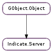

| static | ref_default() |
| static | set_dbus_object(obj) |
| add_indicator(indicator) | |
| check_interest(interest) | |
| get_max_indicators() | |
| get_next_id() | |
| get_path() | |
| hide() | |
| remove_indicator(indicator) | |
| set_count(count) | |
| set_default() | |
| set_desktop_file(path) | |
| set_icon_theme(name) | |
| set_menu(menu) | |
| set_type(type) | |
| show() |
| Name | Type | Flags | Description |
|---|---|---|---|
| count | int | r/w | A number reprsenting the number of items in a server |
| desktop | str | r/w | The desktop file representing this server |
| icon-theme | str | r/w | The Custom Icon Theme Name to use when displaying this Server. |
| str | r | The DBus Object path to an object with a dbusmenu interface on it. | |
| path | str | r/w/c | DBus path for the server object |
| type | str | r/w | The type of indicators that this server will provide |
| Name | Parameters | Return | Description |
|---|---|---|---|
| indicator-delete | int | ||
| indicator-modified | int, str | Emitted every time that a property on an indicator changes and it is visible to the world. This results in a signal on DBus. | |
| indicator-new | int | ||
| interest-added | int | Emitted when a listener signals that they are interested in this server for a particular reason. This signal is emitted by DBus. | |
| interest-removed | int | Emitted when a listener signals that they are no longer interested in this server for a particular reason. This signal is emitted by DBus. note This signal is also emitted after a timeout when the object is created with arg1 set to #INDICATOR_INTREST_NONE if no one has shown any interest in the server. | |
| max-indicators-changed | int | Emitted when a listener either specifies their max number to be higher, or at all. The default is -1 or infinite. | |
| server-count-changed | int | Emitted when the count property of the server changes to a new value. | |
| server-display | int | Emitted when a listener signals that the server itself should be displayed. This signal is caused by a user clicking on the application item in the Messaging Menu. This signal is emitted by DBus. | |
| server-hide | str | Emitted when a server removes itself from DBus. This results in a signal on DBus. | |
| server-show | str | Emitted when a server comes onto DBus by being shown. This is typically when listeners start reacting to the application’s indicators. This results in a signal on DBus. |
| Name | Type | Access |
|---|---|---|
| parent | GObject.Object | r |
Bases: GObject.Object
This is the object that represents the overall connection between this application and DBus. It acts as the proxy for incomming DBus calls and also sends the appropriate signals on DBus for events happening on other objects locally. It provides some settings that effection how the application as a whole is perceived by listeners of the indicator protocol.
| Returns: | A reference to the default Indicate.Server instance. |
|---|---|
| Return type: | Indicate.Server |
This function will return a reference to the default Indicate.Server reference if there is one, or it will create one if one had not previously been created. It is recommended that all applications use this function to create a Indicate.Server as it ensure that there is only one per application.
| Parameters: | indicator (Indicate.Indicator) – The Indicate.Indicator to add. |
|---|
This function adds an indicator indicator to the list that are watched by the server server. This means that signals that are emitted by the indicator will be picked up and passed via DBus onto listeners of the application.
| Parameters: | interest (Indicate.Interests) – Which interest type we’re checking for |
|---|---|
| Returns: | True if a listener as the interest otherwise False |
| Return type: | bool |
This function looks at all the interest that various listeners have specified that they have for this server and returns whether there is a listener that has the interest specified in interest.
| Returns: | A max number or -1 for unlimited. |
|---|---|
| Return type: | int |
This function looks at everyone listening and determines the max number of indicators that can be shown to anyone.
| Returns: | A valid indicator ID. |
|---|---|
| Return type: | int |
Returns the next available unused ID that an indicator can have.
This function hides the server from DBus so that it does not get signals anymore. This causes the signal Indicate.Server ::server-hide to be sent across the bus for all listeners. Also internally it will signal Indicate.Server ::interest-removed for all the interests that were currently set for this server.
| Parameters: | indicator (Indicate.Indicator) – The Indicate.Indicator to remove. |
|---|
Removes an indicator indicator from being watched by the server server so it’s signals are no longer watched and set over DBus.
| Parameters: | count (int) – The number of items that the server believes the user would be interested in. |
|---|
A small convience function to set the Indicate.Server :count property on the server. This should represent a number of messages on a particular server. This should not be used at the same time as individual indicators to show information to the users. They sound be used independently.
This function is used to set the default Indicate.Server that will be used when creating Indicate.Indicators or for anyone else that calls Indicate.Server.ref_default (). Typically this is just an instance of Indicate.Server but applications that create a subclass of Indicate.Server should set this as well.
| Parameters: | path (str) – The new desktop file representing the server |
|---|
This is a convience function to set the Indicate.Server :desktop property of the server object. The property can also be set via traditional means, but this one is easier to read.
| Parameters: | name (str) – The name of an Icon Theme (according to the Icon Naming Specification) to request renderers of the server to use. |
|---|
This is a convience function to set the Indicate.Server :icon-theme property of the server object. The property can also be set via traditional means, but this one is easier to read.
| Parameters: | menu (Dbusmenu.Server) – A Dbusmenu.Server object represting the menu |
|---|---|
| Returns: | None. |
This function sets the internal menu representation for this indicator. It makes it so that when clients ask for information on the menus it’ll repospond with the address of this menu.
It is important to note that there is not signal about menus changing. So if the indicator is already visible there is no way that a listener would know about the change, and thus is likely to have the wrong menu (or no menu).
| Parameters: | type (str) – The new type of the server |
|---|
This is a convience function to set the Indicate.Server :type property of the server object. The property can also be set via traditional means, but this one is easier to read.
This function exports the object onto DBus and shows it to the world. This will be the start of it receiving external signals from DBus. It is likely that, if there are listeners running, there will several Indicate.Server ::interest-added signals coming shortly after this function. This function emits the Indicate.Server ::server-added signal across the bus.